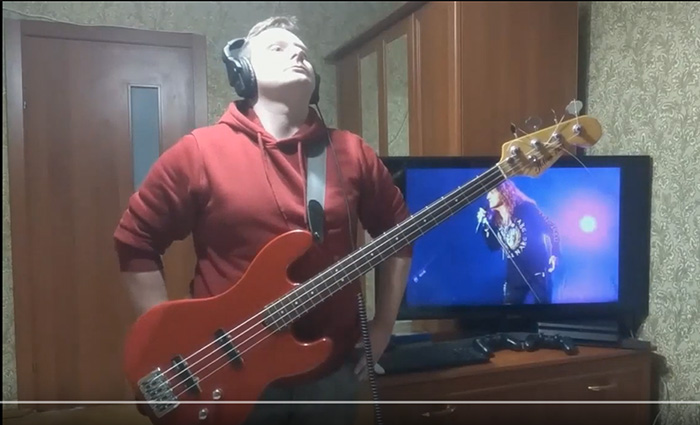

Зустрічайте Ярка!
_____________
Басиста Ярка Crazy Guy без сумніву можна назвати одним з кращих рок-музикантів Києва. За всі роки творчої роботи звіра прихильники отримали еклектичний набір авторських пісень, каверів та власних неповторних басових партій. Поринаючи у творчість талановитого музиканта насолоджуєшся мультижанровим музичним меню, що поєднує в собі гармонію смаку, текстури, чуттєвості з вражаючою майстерністю виконання.
Прослуховуючи композиції Ярка слухач насолоджується сумішшю драйвових і містичних звуків, що наповнюють кімнату і занурюють в додатковий вимір вашої свідомості. Поки що Crazy Guy пропонує безкоштовний доступ до свого каналу на YouTube. Не прогавте нагоду підписатись за посиланям нижче!
Ось що каже сам Crazy Guy про свою творчість запрошуючи нас на свій канал CrazyBass на YouTube:
"Я гарантую. Щоразу, коли ви відвідуєте мій канал на YouTube, як і тисячі моїх шанувальників по всьому світу, ви отримаєте виняткові враження від прослуховування композицій у моєму виконанні. Незалежно від того, чи ви збираєтесь просто приємно провести час і розслабитись, чи послухати скаладнішу музику, ви переконаєтесь, що завдяки своєму чималому досвіду і професіоналізму, я приділяю увагу кожній басовій партії, кожній ноті. Поспішайте підписатись на мій канал поки він безкоштовний!"
Але це ще не все. Щосуботи приєднуйтеся на постійні прямі трансляції Ярка Crazy Stream у Twitch та щосереди на стріми на YouTube "Граю на заказ". На цих онлайн івентах ви матимете унікальну можливість послухати гру нашого героя, поспілкуватись з музикантом в реальному часі, дізнатись про його музичні вподобання, почути історії з живих виступів і репетицій в Airtone Grey та багато чого цікавого. І незалежно від того, в якому настрої ви будете преребувати перед переглядом, після цих незабутніх стрімів ви отримаєте величезний заряд натхнення і бажання розвиватися від великого майстра мотивації Ярка.
Що ж, тепер, коли ви знайшли фан-сторінку Crazy Guy і познайомились з ним, його музичними вподобаннями, саме час долучитись до спільноти його прихильників і підписатись на калал Ярка CrazyBass на YouTube, якщо ви досі цього не зробили. Ось пряме посилання.
Дякуємо, що відвідали нашу сторінку. Сподіваємось було цікаво і корисно ознайомитись з контентом.
Найпопулярніше відео
_____________
Усього творчий доробок басиста налічує 8 чудових відеоробіт. Із великою гордістю розміщую тут відео, яке набрало найбільшу кількість переглядів на каналі CrazyBass YouTube. Робота Ярка не залишила байдужими 1291 глядачів, які в коментарях відмітили вбивчий тон інструмента музиканта, його талант і виконавчу майстерність. Переконайтесь у цьому самі, переглянувши нижче кавер з табулатурою на пісню Hypnotize відомого гурту System Of a Down. Щоправда SOAD підтримують військову агресію росії і критикують Україну.
Якщо відео не відтворюється, перегляньте його за посиланням в YouTube.
Що зараз слухає Ярко Crazy Guy
_____________
Мене часто запитують про те, що саме зараз слухає Ярко. Я один з тих щасливчиків, що має можливість з ним спілкуватись безпосередньо у тих невеликих перервах у його щільному графіку між тим, коли Crazy Guy розвивається, виконує закази, грає на басу та пише нову чудову музику. Можу вас запевнити, у його списку композицій лише якісна перевірена часом і мільйонами меломанів музика. Ексклюзивно для вас, відвідувачів цієї сторінки і шанувальників Ярка, я викладу тут невиличкий список останніх пісень з його програвача. Насолоджуйтесь.
- Xanadu, The Winery Dogs
- Can't You See, Black Stone Cherry
- I Stand Alone, Jackyl
- Crying of the Sun, Metalwings
- Out of the Dark, Wig Wam
- Insomnia, Kamelot
- Nightfall, Xandria
- Parasite, Ozzy Osbourne

Фотогалерея з фанами
_____________
І наостанок кілька світлин Ярка зі щасливими шанувальниками.